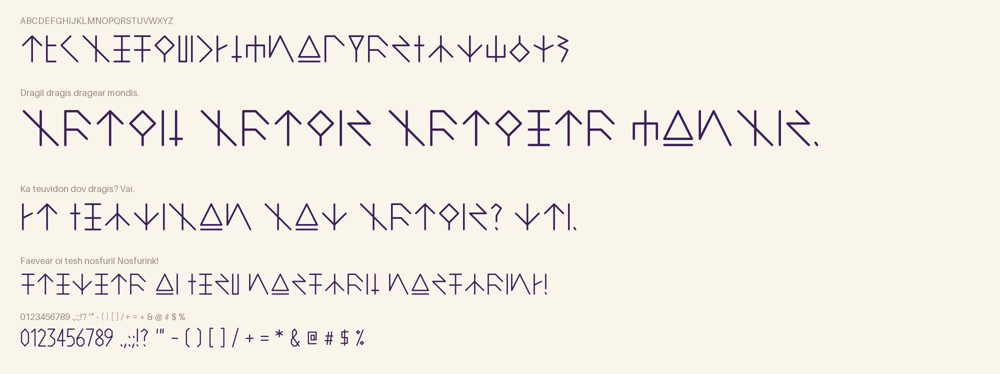
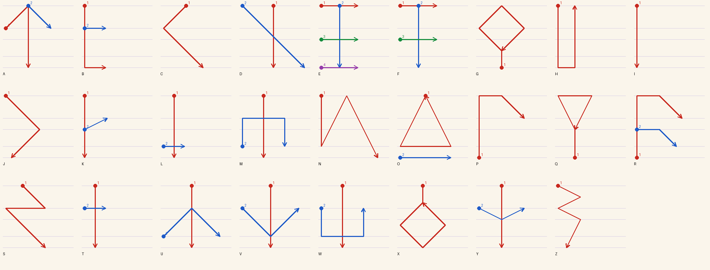

Runetrian is the ancient language of magic in Potion in Motion, a game by Mystic Brew Games set in the potion shop Potion Commotion. Its potions are named in Runetrian and its spells can only be cast in it, and this font is the script those words are written in.

In the game's lore, the first Runetrian was not carved but inscribed with magic, using wands. A spell needed swift, precise strokes, so the script favoured rigid lines and avoided curves, and haste simplified it further over time. The magician Zara then standardized it into an alphabet that is easy to write.
The font follows those rules. Every letter is the swipes a witch makes with her wand, in order: the long main line first, then quick flicks across or off it. Each letter takes one or two swipes (E and F keep their full bars), the most common letters are the quickest, and all of them stand on the baseline, reach the cap line, and place their marks on three lines in between. Diagonals run at one of three slopes. Nothing is filled: where another script would use a dot, Runetrian flicks the wand.

Type English letters and they come out in Runetrian; upper and lower case write the same letters, so any keyboard writes it. Accented letters such as é, ñ or ü carry their accents as small swipes above or below the rune, and combining accents attach to any rune. Runetrian writes its numbers as words (dov dek tre is 23), so the digits, punctuation and symbols in the font are plain shapes drawn with the same wand stroke, there so that any text sets cleanly.